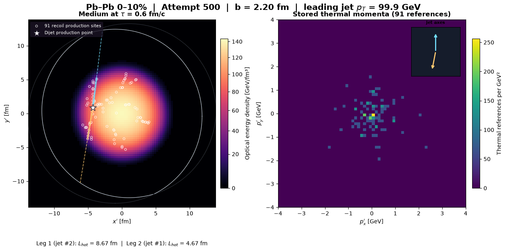
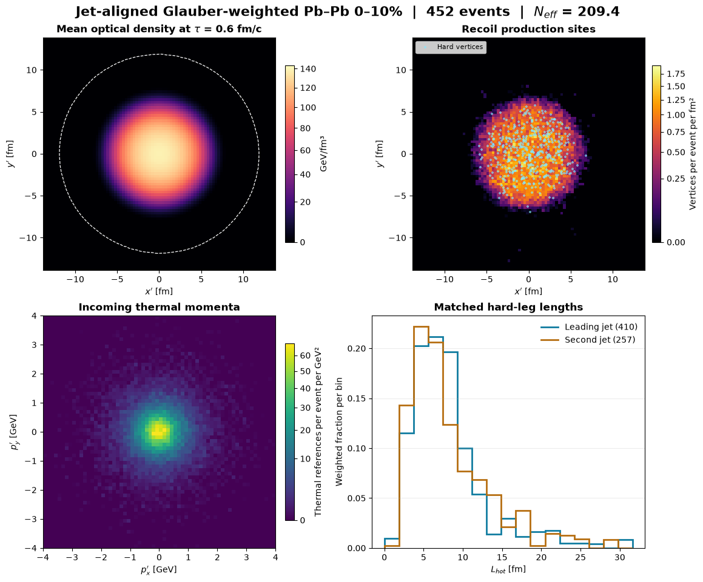
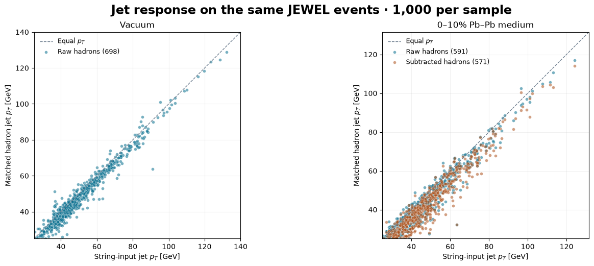
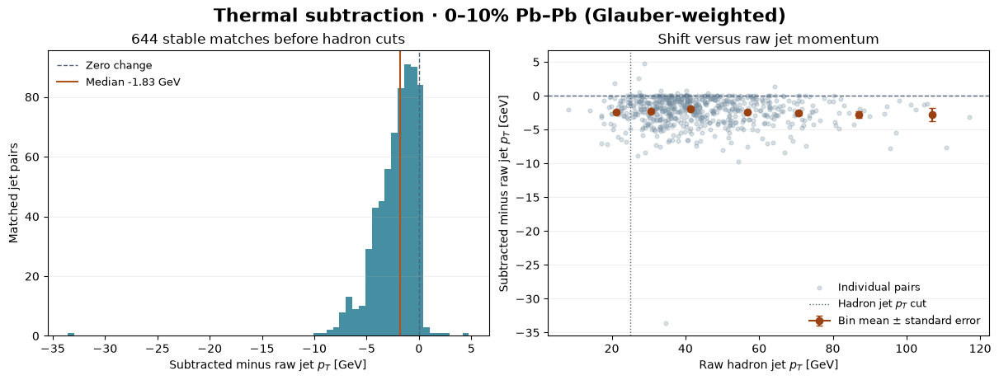

Numerical and event contracts
The C++ CI workflow runs at least 54 tests. The path-length differential test reproduced all 3,264 reported Fortran scalar values on the validation build.
An independent C++17 port of JEWEL 2.6.0 for jet-quenching studies.
Original JEWEL paper
K. Zapp, G. Ingelman, J. Rathsman, J. Stachel and U. A. Wiedemann, “A Monte Carlo Model for ‘Jet Quenching’”, Eur. Phys. J. C 60, 617–632 (2009).
Also cite the perturbative quenching framework and JEWEL 2.0.0 directions for use as applicable.
Install in a Conda environment or venv with cppyy available. The wheel reuses the hepbundle Pythia8, LHAPDF and FastJet libraries.
pip install 'hepyy[hepbundle,jewel-cpp]'
python -c 'import hepyy; hepyy.load("jewel_cpp"); import jewel_cpp'Start with the FastJet notebook or the Python script. Both generate hadronized events and cluster anti-kt jets.
The in-process API supports vacuum, a fixed-impact-parameter medium,
and a zero-interaction control. The JEWEL wheel also includes
jewel-run-events for Glauber sampling, full parton records,
path-length exports and thermal subtraction.
Installation and source-build fallbacks.
The medium example rotates each event so the reconstructed leading jet points north. The optical density map comes from JEWEL’s local temperature. The star marks the common hard vertex, solid ray segments mark intervals with T > 0, and the circles locate stored recoil production vertices. These segments estimate the hard legs’ straight-ray paths. A matched final jet inherits its leg’s estimate.

The 0–10% Pb–Pb sample at 5.02 TeV draws impact parameters from the validated Glauber table with probability proportional to Ncoll. The plotted averages apply the compensating power-5 hard-scale weights. The length histogram uses unambiguous matches. Its lengths refer to the 3D shower-start rays.

Geometry notebook · Run summary and provenance · Path estimator definitions
The full jewel-run-events output gives the exact string
inputs sent to Pythia8 and the hadrons it returns. The
parton-to-hadron notebook
clusters both records with the same anti-kt jet definition and
matches the leading input jet before applying the analysis cuts.
The comparison uses 1,000 accepted events each in vacuum and 0–10% Pb–Pb at 5.02 TeV. The medium run samples impact parameters in proportion to Ncoll from the validated Glauber table. Vacuum shows fragmentation and decay on a common input event. In Pb–Pb the raw stages retain recoil contributions and the corrected hadron collection subtracts incoming thermal momenta and excludes residual thermal entries.

Both hadron jets must match the same selected parton anchor and lie within ΔR ≤ 0.3 of each other. The mean quoted here includes all stable pairs before hadron cuts. Among the 570 pairs passing cuts on both sides, the mean is −2.09 ± 0.08 GeV. Of the stable pairs, 21 pass only before subtraction and one passes only afterward.

Run summary, pairing counts, and binned shifts.
Pythia6 and Pythia8 on identical parton inputs · Thermal subtraction checks
Pythia8 provides the hard input, optional ISR and hadronization. The port implements the JEWEL cascade and expanding optical medium. Component benchmarks use frozen Fortran routines. The full-generator comparisons also measure differences between the Pythia6 and Pythia8 backends and their respective event samples.
The C++ CI workflow runs at least 54 tests. The path-length differential test reproduced all 3,264 reported Fortran scalar values on the validation build.
The vacuum comparison uses million-jet samples. The Pb–Pb report uses the corrected Fortran medium cascade and includes a scan in 10% centrality bins.
Install both runners with pip install 'hepyy[hepbundle,jewel-cpp,glauber-cpp]'.
Generate the Pb–Pb CSV, then run the Glauber-weighted closure
and analyze jets with FastJet. The fresh PyPI run passed all seven
eligible bins. The largest deviation from unity was 1.19 standard errors.
Pip-only workflow · Closure and quenched spectra · ROOT-free Glauber generator
Explore medium-to-vacuum shape ratios and the thermally subtracted ATLAS rg comparison across three jet transverse-momentum intervals. The steering examples cover LHAPDF sets and Pythia8 controls.
The port remains experimental. Some full-generator observable bins still exceed the 10% comparison target, and native MPI is restricted to the audited 5.02 TeV, 20–100 GeV hard window. Validation scope and acceptance criteria.